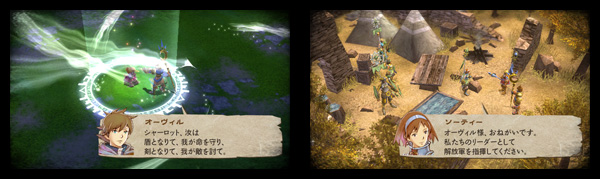
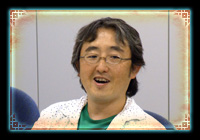
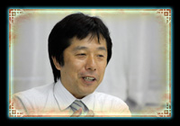
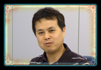

| ―― | ところで、ガーディアンの背中にくっついているのは何でしょうか。 |
| 中園： | あれは軍旗なんですけど、ガーディアンにだけついているものです。細かい部分で、敵と味方の区別をつける他に、「人間」「エルフ族」「ウルフ族」といった種族によっても旗の色や形を変えています。ゲーム中で判断する手がかりにしてもらえれば嬉しいです。 |
 |
|
| ―― | 他にグラフィックで意識されたところはありますか？ |
| 中園： | 「王道」というお題をいただいていて、今の形はそれに対する答えです。画面上で細かな操作を必要とするゲームなので、ガーディアンの旗もそうですが、敵と味方の区別、キャラクターごとの違いを認識してもらえるように気をつけています。 |  |
| 井上： | 各モンスターのデザインから、人間、エルフ族、ウルフ族という種族の違いと、ユニットの機能的な違いを自然に伝えられるようにしてもらいました。 |
| ―― | シナリオも王道のファンタジーとなっていますね。 |
| 井上： | 基本的なプロットは最初から共通しているのですが、最初はもっと全体を俯瞰したようなシナリオでした。開発の途中で、自分が主人公になってストーリーが進んでいく臨場感を出すために、主人公のオーヴィルを中心とした出来事に焦点を絞って、一度だけ内容を大きく修正しています。 |
| ―― | 終盤のストーリー分岐も、最初から用意されていたんですね。 |
| 石川： | やはり、自分で能動的にストーリーに関わるような機会も用意しておきたかったので。このゲームの場合、ストーリー分岐を楽しむものとも違うので、選択は一度だけです。それをどうやって盛り上げるかはしっかり考えました。 |
| ―― | ボスと戦う直前のクライマックスで、急に選択を突きつけられたので驚きました。 |
| 井上： | 短い時間でバトルを繰り返すというゲームではありますが、単純に勝ち負けで結果をひとくくりしたくなかったんです。プレイヤーの皆さんがキャラクターへの思い入れを深めつつ、「戦争」に関して自分の意見を持ってもらえたら嬉しいです。 |
| ―― | 大澤さんはスーパーバイザーとしてシナリオにいろいろと関与されたようですが、いかがでしたか？ |  |
| 大澤： | もともとの設定やキャラクターの世界観についての異論はありませんでした。ただ、実際に出来上がったシナリオの中で、細かな言い回しや振る舞いにその設定が活かしきれていないと感じる部分があったんです。その辺りを全体的に指摘させてもらいました。 | |
| 井上： | 大澤さんには、キャラクターになりきって確認していただきました（笑）。 |
| 大澤： | そうしないと、脚本に注文はできませんから（笑）。もし僕がソーティーだったら、と仮定してセリフを言ってみるんです。たとえば怒るにしても、相手に対してどんな思いを持っているのか、そのセリフは一番素直に出てくる言葉なのかと考えました。このゲームの中でキャラクターの感情を表現できるのはごく限られているので、一番効果的でわかりやすい表現を考えたんです。 |
| ―― | 脚本はタイトーさんと任天堂の二人三脚で進めていかれたんですね。 |
| 大澤： | 私が言わなくても、タイトーさんの中にもともとあった考えだとは思うんです。ただ、他の仕様や開発状況との兼ね合いで抑えていた部分はあったはずなので、いい意味でも悪い意味でも第三者的な立場からそこを指摘させてもらいました。 |
| ―― | タイトーさんのゲームといえば、ZUNTATA※の音楽も注目のポイントですが、こちらも王道のオーケストラサウンドでした。 |
| 石川： | 作曲そのものは私ではなく別にコンポーザーさんがいるんですが、ふたりで相談しながら作っていきました。やはりこちらもテーマが「王道」なので、豪華なオーケストラ調の曲でいくことは最初の段階から決めていたんです。今回はストーリーもドラマチックなので、メロディアスではっきりと喜怒哀楽がわかるように、そして覚えやすくて、聴くと場面が思い浮かぶよう作りました。 |
| 井上： | 曲のバリエーションが非常に多いので、シナリオの演出もすごく助けられています。プレイにゆとりのある方はぜひ曲を聴きながら楽しんでいただきたいですね。 |
| 石川： | 『タクトオブマジック』で必要な曲のリストをもらったあとで、「こういう感じのストーリーも入るから」とシナリオが増えていったんです。それに合わせて「こういう曲の必要性を感じているので曲を増やそうと思っています」と報告していって、最終的には、当初予定の倍くらいになりました。私が担当したゲームでは最大の数ですね。 |  |
| 井上： | 当社比２倍です（笑）。 |
| 石川： | 特にシャーロットの音楽はヒロインなので音楽的にもギミックをつけました。彼女が関係したシーンのBGMは実はすべて同じフレーズからできていて、オーヴィルと仲良くしているシーンも、悲劇的なシーンも、メロディは一緒でもアレンジが全部違うという形になっています。 |
| ※ZUNTATA…株式会社タイトーのサウンド開発部門の総称。 |